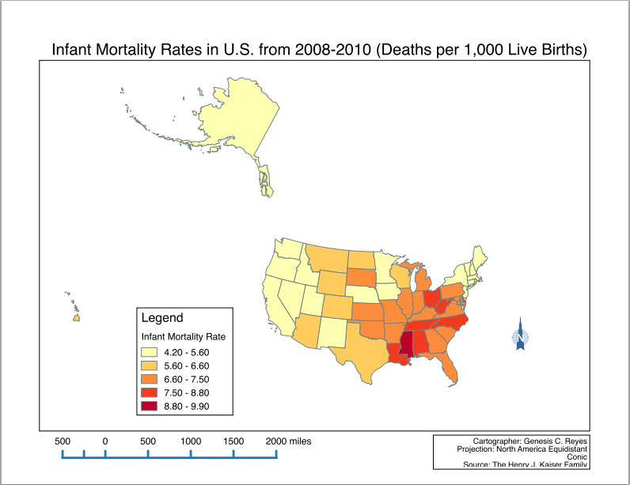

GIS Portfolio
Interactive Cartography
Population Change in England
Technologies used: Leaflet JS library, HTML5/CSS3, QGIS, Excel, JSON, Stamen Title layer, OpenStreetMap
Cartography

Infant Mortality Rates in the U.S.
Technologies used: QGIS

Decade of Green
Technologies used: ESRI products - ArcMAP10